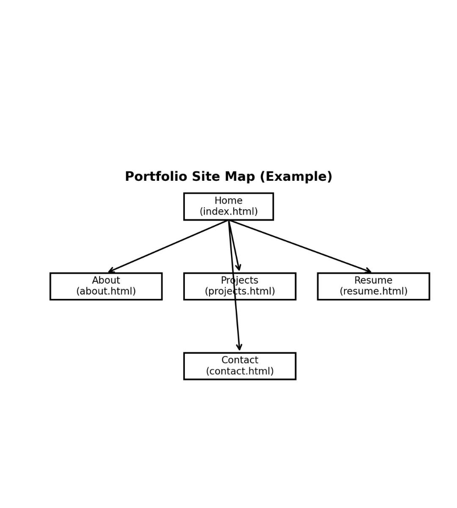

Figure 2: Homepage wireframe sketch (click image to view full size).
Jump to Project Resources | Jump to Site Map | Jump to Wireframe
This project involves the creation of a personal portfolio website designed to showcase my skills, projects, and professional background in web and digital design. The website will act as a centralized hub for employers, instructors, and collaborators to learn more about my work.
The primary objectives are to present my work professionally, improve usability through clean navigation, and demonstrate foundational HTML and CSS skills.
The website will be organized into five main pages with a consistent navigation bar. Each page will focus on a specific area of content while maintaining a unified visual design.

Figure 1: Portfolio website site map (click image to view full size).
The homepage will include a header with navigation, a hero section introducing who I am, and a featured projects section. The design will be clean and minimal to keep focus on content.
Figure 2: Homepage wireframe sketch (click image to view full size).
One helpful resource for this project is MDN Web Docs, which provides detailed documentation on HTML and CSS elements.
This resource will be used to verify proper tag usage, improve semantic structure, and ensure best practices during development.